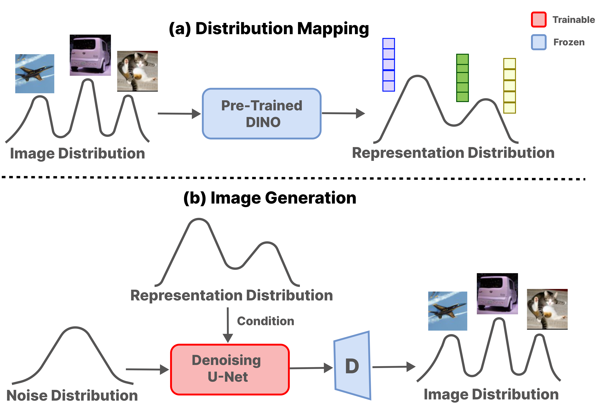
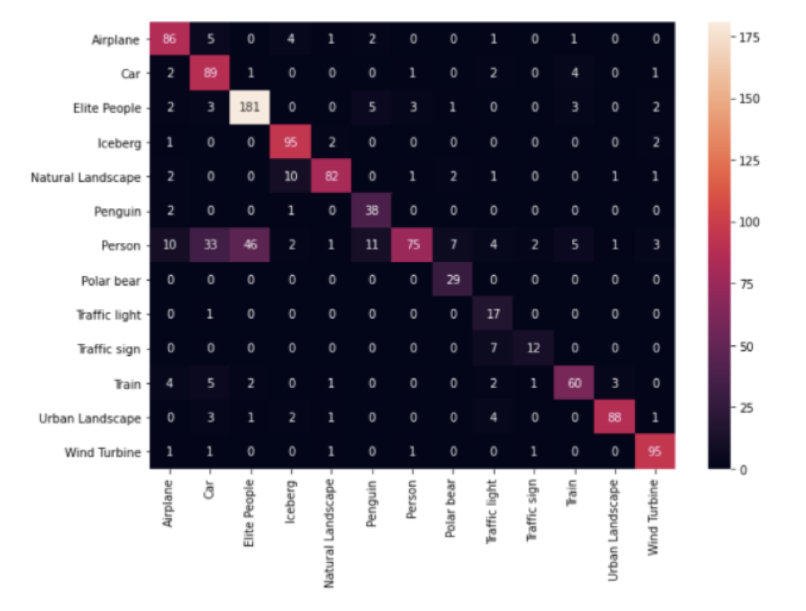
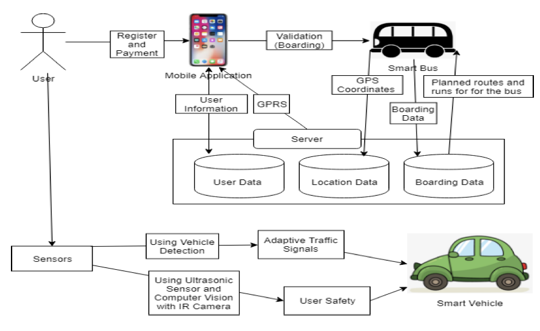

{kind=link}
About Me
I'm a fourth-year PhD student at Linköping University, advised by Prof. Gabriel Eilertsen and Prof. Jonas Unger. My research is supported by the Wallenberg AI, Autonomous Systems and Software Program (WASP) and the WASP NEST __Main__ funded by the Knut and Alice Wallenberg Foundation . I'm broadly interested in diffusion models, representation conditioning and synthetic data in deep learning.
Previously I got my bachelors in Computer Science and Engineering at VIT, Vellore and my masters in Computer Science at Uppsala University, working at the UU-Infolab with Prof. Matteo Magnani. In the past I've also worked as a Reasearch Engineer at Umeå University for WARA Media and Language with Prof. Johanna Björklund. I enjoy playing tennis in my free time, as well as following Manchester United.
Recent News
- [Mar 2026] Submitted a paper to CVPR 2026 Workshop
- [Jan 2026] Attended the WASP Winter Conference in Örebro and presented my research poster on Evaluating Representation Conditioned Diffusion Models.
- [Nov 2025] Submitted our paper "Evaluating Representation Conditioned Diffusion Models: A Comparative Study of Representation Encoders" to Journal of Visual Communication and Image Representation! [Preprint]
- [Mar 2025] Submitted our short paper "Towards Controllable Image Generation through Representation Conditioning" to SSBA/SSDL Symposium in Stockholm and presented our poster! [Paper]
- More...
Publications and Reports
* indicates equal contribution
|
 |
Nithesh Chandher Karthikeyan, Jonas Unger, and Gabriel Eilertsen. Swedish Symposium on Image Analysis and Deep Learning, 2025. Paper |
|
 |
Nithesh Chandher Karthikeyan. Masters Thesis, 2021. Paper |

|
Ahmet Can Turgut, Borja González Farías, Egemen Yiğit Kömürcü, Jad Ali Daoud, Laleh Aftabi, Nithesh Chandher Karthikeyan, Raheel Ali, Reuben Rajkumar Sajith, Saradh Tiwari, Uvais Karni, and Vaidehi Vipra. Ericsson Research, 2020. Paper Code |
|
 |
Nithesh Chandher Karthikeyan*, Aswath Ananthasamy*, and Yokesh Babu Sundaresan. International Journal of Recent Technology and Engineering (IJRTE), 2019. Paper |
Invited Talks and Lectures
- My Research Presentation, November 2025 on Representation Conditioned Diffusion Models [Recording]
- Lecture, November 2025 on Sequence Modelling for Deep Learning Course in Linkoping University [Recording]
- ESC Interview, March 2025 on PG and Doctoral Studies in Sweden [Recording]
- My First Lecture, November 2024 on Sequence Modelling for Deep Learning Course in Linkoping University [Recording]
Service
- Organizer: Visual Computing Lab (VCL) Reading Group [2026]
- Deputy PhD Representative: Media and Information Technology Unit at Linköping University [2024-2025]
- Co-Organizer: WASP Summer School [2022, 2023]